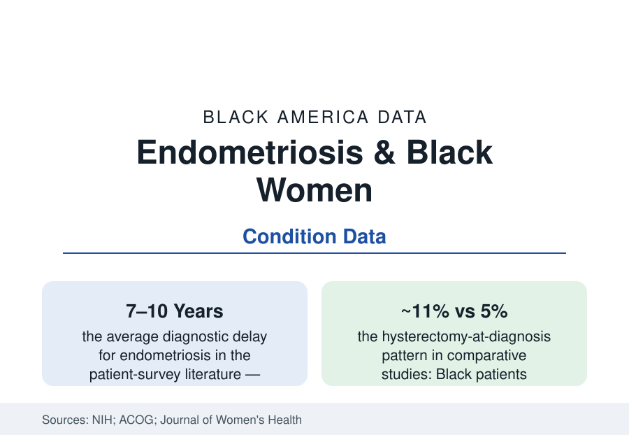

Black Public Health
Endometriosis in Black Women: The Decade of Pain Before the Name
Endometriosis takes 7–10 years to diagnose on average — longer for Black women, whom medicine long mislabeled immune. The prevalence, delay, and treatment data.

For most of the twentieth century, endometriosis carried a label in the medical literature — the 'career woman's disease,' implicitly white and affluent — that functioned as a diagnostic filter: the Black woman describing cyclic pelvic pain was routed toward other explanations, and the disease's epidemiology recorded an absence the clinic had manufactured. The corrected data tell a different story: endometriosis affects on the order of one in ten women of reproductive age in the population estimates, Black women included at rates the laparoscopic studies (where diagnosis does not depend on being believed) find comparable — while the diagnosis itself still arrives later for them, and the treatment fork still bends toward hysterectomy. This article reports the corrected file.
Prevalence and the Record That Hid It
The historical record's bias is documented in the literature's own archaeology: mid-century case series from segregated practice (the Johns Hopkins and charity-hospital gynecologists who operated on Black women in volume) reported endometriosis rates in Black surgical patients that contradicted the immunity story at the time — and were discounted against the private-practice series built on insured white patients, the classic confounding of access with incidence that this section's files record repeatedly. Modern ascertainment tells the settled story: the Nurses' Health Study and the surgical-series meta-analyses put Black women's prevalence modestly lower in self-reported and diagnosed data — the gap the methodologists attribute substantially to the diagnostic pathway itself (self-report requires a diagnosis; a diagnosis requires the surgery or imaging work-up the access file rations) — while symptom prevalence in the community surveys runs at parity. The related conditions cluster in the same patients the fibroids article describes: the two diseases co-occur, share the pain-clinic waiting rooms, and compete in the differential that Black women's charts resolve more slowly.
The Delay: Pain's Credibility Economy
The diagnostic odyssey is the disease's universal cruelty — seven to ten years from symptoms to diagnosis in the patient-organization surveys, dozens of consultations, the pain normalized by patient and clinician alike ('bad periods' the chart's dismissal across all races) — and its racial gradient is measured in the comparative studies: Black women report longer paths, more misattributions (pelvic inflammatory disease the classic mislabel, its STI framing adding stigma to delay — the sexual-health article's chart problem in gynecologic form), and lower rates of the referral to the gynecologic specialists who diagnose clinically rather than demanding surgical proof. The downstream data carry the delay's price: stage at diagnosis more advanced in the comparative series, the fertility consequences compounded (endometriosis a leading cause of infertility — its late treatment narrowing the options of the maternal file), and the mental-health ledger of a decade of unexplained, disbelieved pain (the depression comorbidity the studies record). The imaging era is changing the requirement — specialist ultrasound and MRI protocols now diagnose much disease without surgery in the guideline evolution — with the access distribution of the new pathway its own next dataset.
Treatment: The Fork Toward Hysterectomy
The treatment data preserve the oldest pattern in the file: comparative studies across decades find Black women with endometriosis more likely to undergo hysterectomy and less likely to receive the conservative, fertility-preserving excision surgeries (performed by a small subspecialist class — the minimally invasive gynecologic surgeons, whose distribution the access map rations by geography and insurance) or the hormonal management regimens (the GnRH-class medications with their cost and authorization gauntlets). The hysterectomy differential survives adjustment for disease severity in several analyses — the fibroids file's identical fork, the same chart-level mechanics (the surgeon's training, the patient's fertility wishes elicited or assumed, the operating room's scheduling economics) — and the patient-preference studies complicate any single-cause reading: Black women's own treatment choices, formed inside the information the system gave them, are part of the recorded data too. The advocacy infrastructure is the current era's growth: the Endometriosis Foundation's and the Black-women-led organizations' education campaigns (rebuilding the symptom vocabulary the immunity myth suppressed), the research registries recruiting the patients the trials missed, and the guideline revisions (ACOG's and the international societies') that now name the racial diagnostic gap in print — the profession documenting, in its own standards, the correction this article records.
Reading the Endometriosis Data
A disease of one woman in ten, misfiled for a century under another population's name: endometriosis is the health section's purest case of the epidemiology of belief — the recorded rate was the diagnosis rate, and the diagnosis rate was a story medicine told itself about whose pain was interesting. The corrected counts are still being assembled, cohort by cohort and scan by scan. The women who waited the decade are the control group no ethics board would approve and every reader already knows.
More in Black Public Health
Hypertension Among Black Adults: Prevalence, Control, and Consequences
About 55 percent of Black adults have hypertension — the highest rate of any U.S. group. Prevalence, onset, control, and the stroke, heart, and kidney consequences in the data.
Diabetes Among Black Adults: Prevalence and Complications
Nearly one in five Black adults has diabetes, diagnosed or undiagnosed — and its complications fall with particular weight. The CDC data on prevalence, control, and outcomes.
Black Life Expectancy: The Gap at Birth and Its Causes
Black life expectancy at birth is about 73 years, roughly five years below the national figure — the summary measure of every health gap in this section. The CDC data.
Source: National Institutes of Health; American College of Obstetricians and Gynecologists; Endometriosis Foundation of America; Journal of Women's Health and Fertility and Sterility research literature.